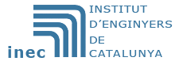

{% include feature_row %}

{% include base_path %}

<h3 class="archive__subtitle">{{ site.data.ui-text[site.locale].recent_posts }}</h3>

{% for post in paginator.posts %}
  {% include archive-single.html %}
{% endfor %}

{% include paginator.html %}

<footer>
  <p > 
  <a href="http://www.enginyers.cat" class="image featured"></a>
  <a href="http://www.igenium.cat" class="image featured"></a>
  </p>
</footer>
